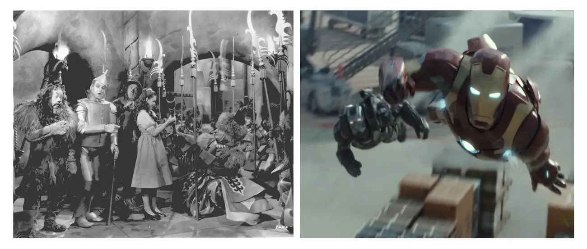

Depuis la fin du 19e siècle, le cinéma a beaucoup changé, surtout à cause du cinéma, que les frères Lumière ont inventé en 1895. Le cinéma a rendu les histoires plus faciles à regarder, donc le cinéma a commencé à se concentrer sur de nouvelles histoires, de meilleurs décors et des personnages plus intéressants. Dans les années 1950, le cinéma a ajouté de nouveaux styles et des technologies pour créer des spectacles plus captivants, même si la télévision est devenue populaire. Aujourd'hui, le cinéma continue de changer en utilisant des technologies et de nouvelles histoires pour attirer le public moderne tout en gardant son histoire.
